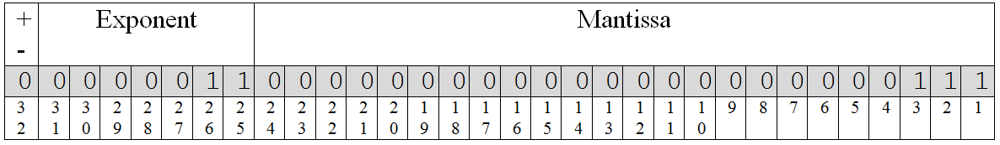
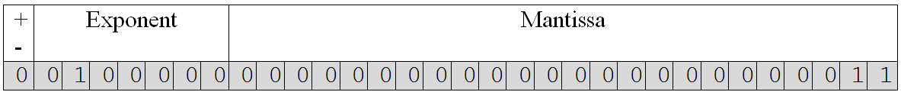
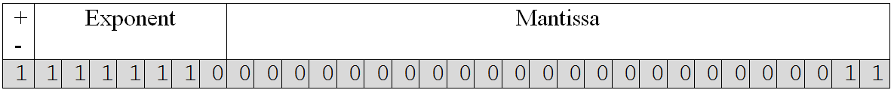
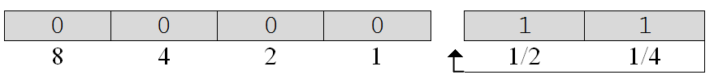

Most modern personal computers are based on a word size of thirty-two bits. Using two’s complement notation, they can conveniently manipulate numbers in the range of –2 billion to +2 billion.[5] Many times we humans need our computers to work with numbers far outside of this relatively narrow range. For example, scientific applications often need to represent very large or very small quantities, such as Avogadro’s number, 6.02 x 10 23 molecules/mole. Even a program designed to make projections about the national debt of the United States, which is measured in trillions of dollars, will be forced to work with numbers outside of the range provided by the 32-bit two’s complement representation.
In addition to the problem of being limited to a relatively narrow range of values, the two’s complement binary notation we studied cannot represent fractions – making it impossible to express concepts like ½ and 75%.
Floating point notation, which is closely related to exponential notation, addresses both of these problems. As you will recall from high school math or science classes, exponential notation is often used to express very large or very small numbers. For example, the speed of light can be expressed as: 3.0 × 10 8 meters/second.
The two components necessary to express a number in exponential notation are called the mantissa (3.0 in the above number) and the exponent (8 in the above number). These values are expressed in base ten, so the exponent is expressed in terms of base ten as well. Essentially the exponent tells us the number of positions that the decimal point should be moved to the right or left. Positive exponents cause the decimal point to move right. Negative exponents cause the decimal point to move left. Hence, the representation for the speed of light translates to a “3” followed by eight 0’s – three hundred million meters per second. Fractions can also be expressed in this system. For example:
1/1,000 = 1.0 × 10 –3 = 0.001
Floating point notation is the “machine-level” equivalent of exponential notation. Floating point numbers include signed representations of both the mantissa and exponent. Since the representations of both will be in base two, two will also be considered the base of the exponent.
Here is the number fifty-six expressed using one possible 32-bit floating point representation:
The leading bit (bit 32) of this representation signifies the sign of the number (0 for positive, 1 for negative). The next seven bits (bits 31 – 25) represent the exponent in two’s complement notation (remember the exponent can be positive or negative). The final twenty-four bits are the mantissa expressed as an unsigned number. The number represented in this example is 111 × two 11 which in decimal notation becomes 7 × 2 3 = 7 × 8 = 56.
Another way of thinking about this example is to view the exponent as specifying the number of 0’s that are to follow the bit pattern supplied by the mantissa. In this case, we have “111” followed by three 0’s or “111000” which is 32 + 16 + 8 = 56.
Here is an example of a number that is outside the range of values that can be stored using a 32-bit two’s complement notation. The number is 11 × two 100000 which in decimal notation is 3 × 2 32 = 12,884,901,888.
Another way of thinking about the number represented by this bit pattern is as “11” followed by thirty-two 0’s.
As a final example, consider the representation of - 0.75 as a floating point number.
The “1” in the leftmost bit signifies that the number is negative. The exponent 1111110 is also negative due the “1” in its leftmost bit. The magnitude of the exponent is two (Complement the bits to get 0000001 and add one, giving 0000010 = two). The magnitude of the mantissa is 11 = three. So, the value is -3 × 2 -2 = -3 × 0.25 = -0.75.
Another way of thinking about the number in this example is to view it as “▴11” where the symbol “▴” specifies the “binary point” (the binary equivalent of the decimal point). The columns to the right of the binary point are ½’s column, the ¼’s column, the 1/8’s column, 1/16’s column, and so forth. The number “▴11” would then be interpreted as having a “1” in the ½’s place plus a “1” in the ¼’s place, giving ¾ or 0.75. Under this interpretation, the mantissa always has an implied binary point immediately to its right. The exponent specifies the number of positions to the right (for positive exponents) or to the left (for negative exponents) the point should be moved. Hence, in this case the exponent moves the binary point two places to the left giving “▴11”. The binary number is then interpreted in the following way:
It is interesting to note that some fractions that can be expressed precisely in decimal notation, such as 1/10 = 0.1, do not have an exact floating point representation. This is due to the fact that floating point numbers are represented using base two. One-tenth can be approximated by the fraction “▴0001 1001 1001 1001…” in base two (where “1001” repeats indefinitely), but it can never be represented exactly. This result should not be surprising. After all, many factions, such as 1/3, cannot be represented exactly as decimal values. This is one reason why computed results that involve fractions are not always 100% accurate. They sometimes suffer from round off error as a result of the base ten to base two conversion process.
Exercises for
Footnotes
[5] Well, as pointed out earlier, actually -2,147,483,648 to 2,147,483,647